- 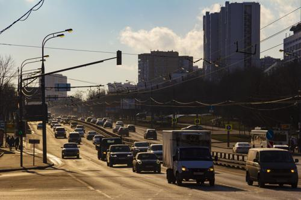 写真第3枚" title="テョプリー・スタン→ブトヲ：2020冬 -> 写真第3枚（クリックして完全版を見る）">


- 写真第21枚" title="テョプリー・スタン→ブトヲ：2020冬 -> 写真第21枚（クリックして完全版を見る）">
- 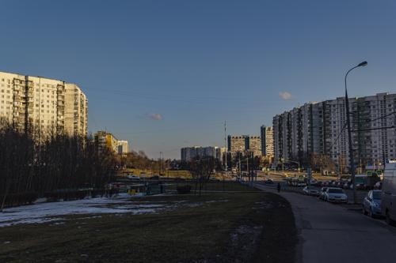 写真第22枚" title="テョプリー・スタン→ブトヲ：2020冬 -> 写真第22枚（クリックして完全版を見る）">

- 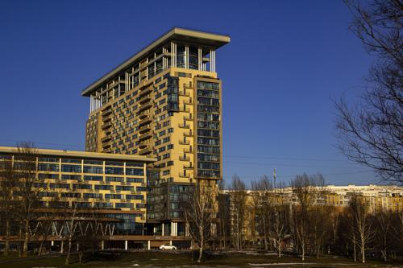 写真第24枚" title="テョプリー・スタン→ブトヲ：2020冬 -> 写真第24枚（クリックして完全版を見る）">


- 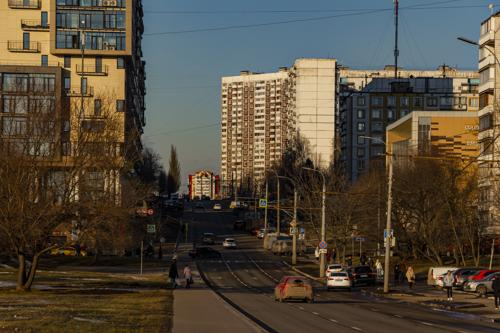 写真第27枚" title="テョプリー・スタン→ブトヲ：2020冬 -> 写真第27枚（クリックして完全版を見る）">
- 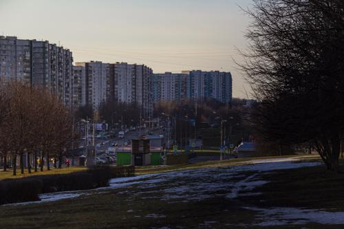 写真第28枚" title="テョプリー・スタン→ブトヲ：2020冬 -> 写真第28枚（クリックして完全版を見る）">


- 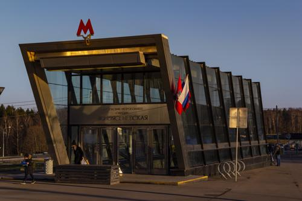 写真第32枚" title="テョプリー・スタン→ブトヲ：2020冬 -> 写真第32枚（クリックして完全版を見る）">


- 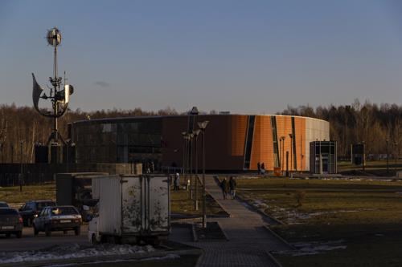 写真第35枚" title="テョプリー・スタン→ブトヲ：2020冬 -> 写真第35枚（クリックして完全版を見る）">

- 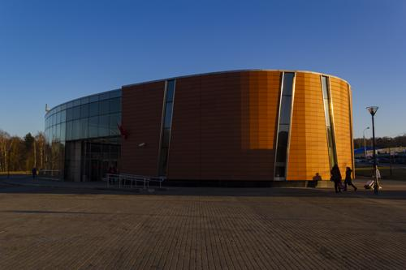 写真第37枚" title="テョプリー・スタン→ブトヲ：2020冬 -> 写真第37枚（クリックして完全版を見る）">
- 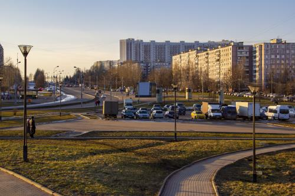 写真第38枚" title="テョプリー・スタン→ブトヲ：2020冬 -> 写真第38枚（クリックして完全版を見る）">


- 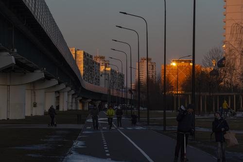 写真第48枚" title="テョプリー・スタン→ブトヲ：2020冬 -> 写真第48枚（クリックして完全版を見る）">
- 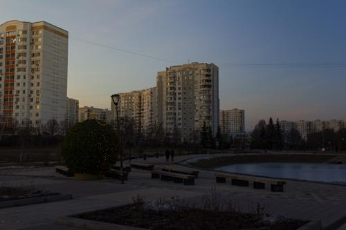 写真第49枚" title="テョプリー・スタン→ブトヲ：2020冬 -> 写真第49枚（クリックして完全版を見る）">


- 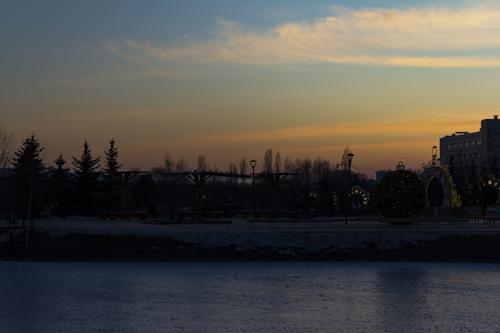 写真第52枚" title="テョプリー・スタン→ブトヲ：2020冬 -> 写真第52枚（クリックして完全版を見る）">


- 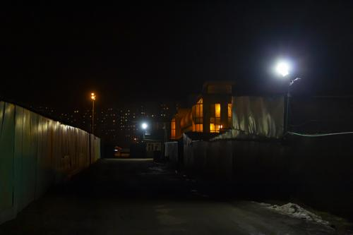 写真第56枚" title="テョプリー・スタン→ブトヲ：2020冬 -> 写真第56枚（クリックして完全版を見る）">